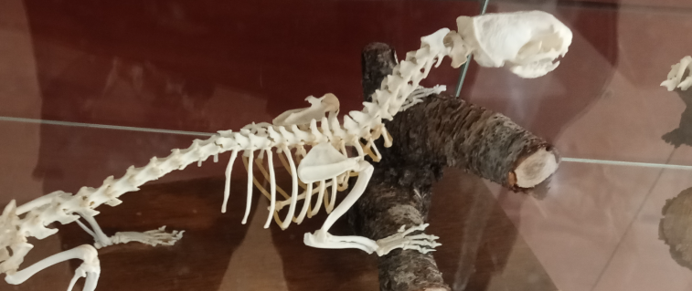
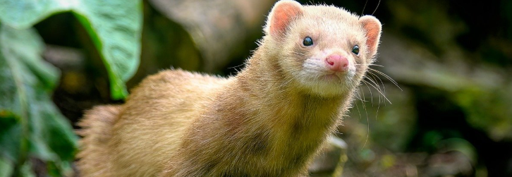
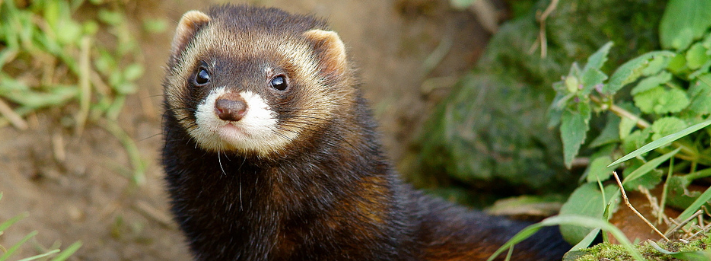
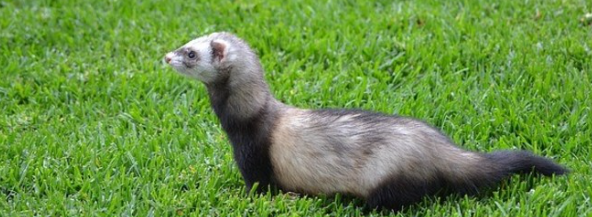

Turón




Un turón es un pequeño carnívoro de la familia de los mustélidos, distribuido por una parte de Europa, el norte de África y Asia occidental.
Este animal posee un cuerpo alargado y flexible, con patas cortas, apto para moverse con rapidez por el fondo del bosque e introducirse dentro de las madrigueras de roedores y conejos, de los que se alimenta. La cabeza es pequeña, ancha y aplastada, y sus diminutas orejas redondeadas apenas sobresalen. La longitud de cabeza y cuerpo es de unos 30 a 50 cm, mientras que la cola (muy poblada) mide de 10 a 19 cm. Mientras que los machos pueden superar ligeramente el kilo de peso, las hembras alcanzan solo entre 650 y 850 gr. Estas disponen de ocho glándulas mamarias con las que amamantan a sus crías durante el periodo de lactancia.
Aquí puedes añadir más información: tipos de costillas, estructura o curiosidades.
← Volver